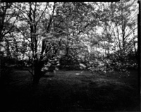

Worldwide Pinhole Photography Day 2020
| Photographers around the world join together in collaboration on the last Sunday of April each year, to celebrate the low-tech fun of pinhole photography. A bit of googling will give you plenty to read, and view.
All are welcome to participate, and there is one primary rule for inclusion in the official online WPPD gallery. The image you submit must have been made with a pinhole camera on the appointed day, which fell on April 26 in 2020. | ||
| This was my first year of participation, and in addition to making the image, I also designed and built a new, larger camera the same day. The exposure was made on Ilford's Harmon Direct Positive paper, and I like the primitive feel of this 5x7 image. | ||
|
Unlike conditions for the pretty portrait of the camera taken later that week, we had horrid wind and rain on WPPD 2020. By the time I finished the camera the light was fading, and the exposure ran a full hour from 6 - 7 pm.
Click here for more details on my 5x7 WPPD 2020 camera. |

|

|
|---|---|---|
| My past results with the direct positive paper have been inconsistent at best, so I also made a 4x5 exposure of the same scene, using a sheet of expired TMax 100. This exposure calculated at 3 minutes at f205, and doubling that to 6 minutes was still not enough for the sensitivity losses due to reciprocity and age. |

|  |
|
I prefer the 5x7 image, as well as that it was made the same day as the camera that made it possible. It was an easy choice to make it my 2020 contribution to the WPPD gallery.
I look forward to joining the fun again in the future, and who knows, perhaps with a new camera next time as well. | ||
Copyright 2020, Thayer Syme
All rights reserved